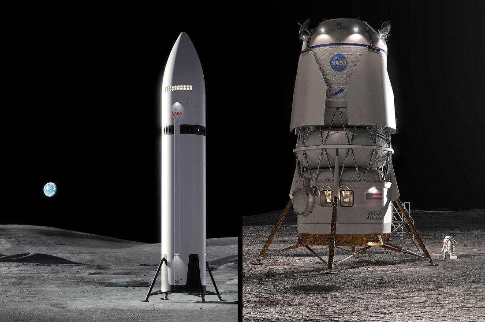
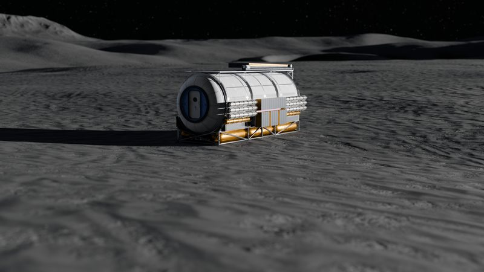
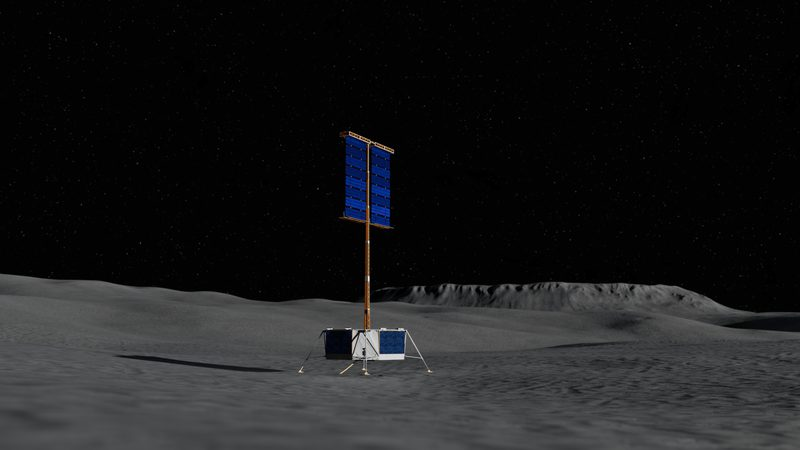

Left: Earth just above the lunar horizon. Right: the Sun coming out from behind the Moon. Both seen by the Artemis II crew, April 2026

Low sunlight along the line between lunar day and night, Artemis II, April 2026

The lunar south pole, where the Sun never rises far above the horizon

Earth rising over the Moon, photographed from Apollo 11, July 1969

The Apollo 11 landing site seen from orbit by the Lunar Reconnaissance Orbiter, 2009

Surveyor 3, photographed by the Apollo 12 crew at its landing site, November 1969

The Apollo 14 landing site at Fra Mauro seen by the Lunar Reconnaissance Orbiter, 2009

Hadley Delta, seen from the Apollo 15 lunar module just after landing, July 1971

The Apollo 17 landing site in the Taurus-Littrow valley, December 1972
Why the south pole?



Artists' concepts of a future Moon base near the south pole. Landing: SpaceX and Blue Origin, via NASA. Living and power: NASA.
Some craters near the Moon's south pole have not seen sunlight for billions of years. Water ice is thought to be trapped inside them, and that is why many future missions plan to land nearby.
The same place is hard to land at. Near the pole the Sun never climbs far above the horizon, so shadows are long and a small hill can block the light. Earth also sits low in the sky, and from some spots a crater rim hides it completely. A lander there needs sunlight for power and a view of Earth to send data home.
Moving a landing site a few kilometres, or the date by a few days, can change both. This project is building a tool that shows those changes clearly.
Plan a landing
Compare sites and dates side by side: Sun elevation, hours of sunlight, and when Earth is in view.

Learning resources
A study guide to how the Sun and Earth move in the lunar sky, for learning on your own or teaching in class.